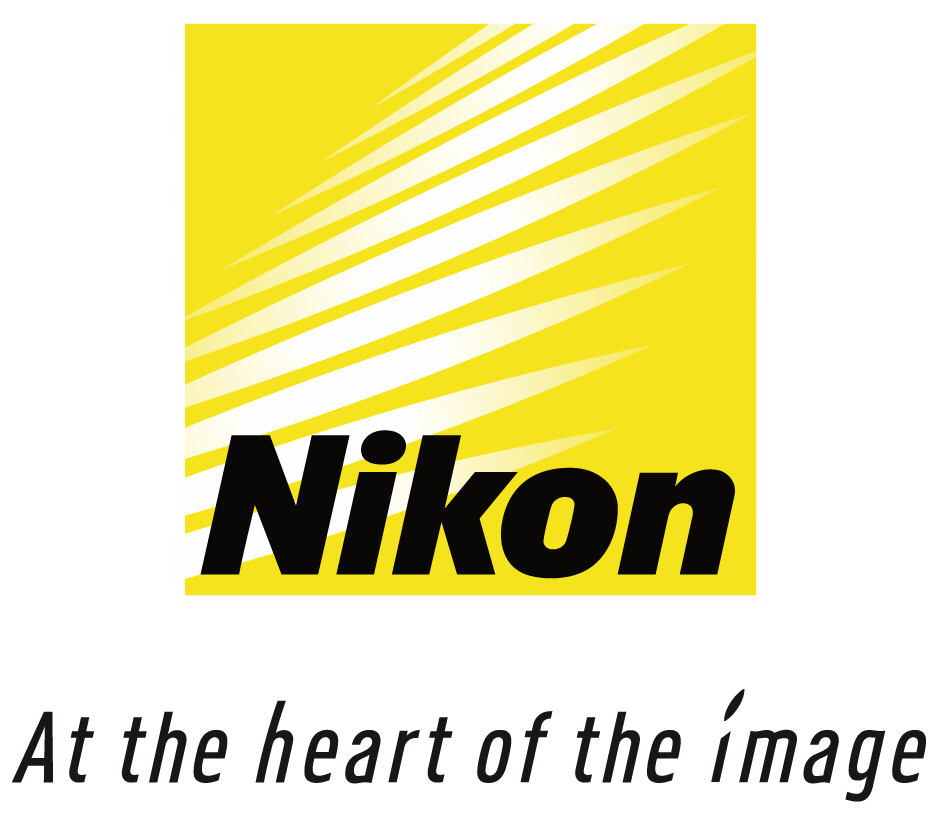

Sobre
Nascido em Belo Horizonte, começou sua jornada no mundo do audiovisual em 2006, na época autando no backstage do mundo da revelação analógica de filmes conhecendo todo o processo desde a captação da imagem até o produto final que naquele momento seria o fotografia impressa. Contudo dado o avanço das tecnologias, o mundo da fotografia analógica foi ficando, aos poucos, levemente devasado e com isso veio a necessidade do ingresso no mundo digital e com ele a abertura de um mundo de possibilidades mesmo passando por várias áreas ao longo desses anos como, coquetelaria, produção musical, entre outras coisas, nunca abandonou a fotografia, e com isso ganhando mais habilidades para agregar na visão de mundo mais artística que é tão importante pra um trabalho dessa magnitude

- 